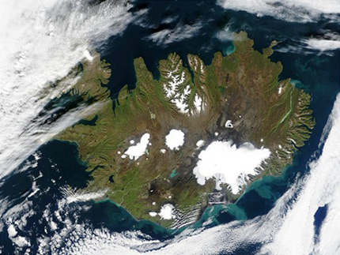

De lokroep van IJsland
zaterdag 15 januari 2005 | Reiskriebels
Gisterenavond in ‘t Zuiderhuis in Gent was er een informatieavond over reizen in IJsland. Sinds een paar maand lonkt deze onaardse sirene van ijs, kolkende lava, stinkende zwavelmodder en messcherpe rotsen om haar te bejegenen met een bezoek. Dat we er heen gaan staat vast. Dat het niet deze zomer zal zijn ook. Maar hoe, waar en wat, dat moeten we nog allemaal uitzoeken.
IJsland is het land van de fotografie. Er staat zo goed als geen boom op het hele eiland, maar het stikt er in de zomer van broedvogels die je op het Europese vasteland zelden of nooit tegenkomt, de vegetatie heeft een heel apart karakter door de woeste omstandigheden, en vooral de combinatie van eeuwenoud gletsjerijs, gitzwarte basaltstranden, de hitte uit het binnenste van de aarde en het immer veranderende licht zorgt voor zeer fotogenieke taferelen. “Neem het aantal filmpjes dat je normaal meeneemt op een reis van drie weken en doe dat maal vier”, kregen we gisteren te horen.
Goedkoop is IJsland niet. Voor drie weken in de zomerperiode betaal je algauw 1500 euro. Dat kan tellen. Daarenboven bestaat het gevaar dat je elk jaar opnieuw zal willen gaan ;-)
Indien iemand interessante links, fotogallerijen of ervaren IJslandtrekkers kent, dan hoor ik dat graag. De mensen van ‘t Zuiderhuis kunnen ons in elk geval al een heel stuk (zoniet helemaal) op weg helpen. Er moet nog heel wat gepland, maar er is tijd. De target is juli volgend jaar.

JefPober op 16 januari 2005
Ijsland trekt me ook hard aan maar ‘t zal voor mij deze zomer eerst Noorwegen worden.
Wikitravel (http://wikitravel.org/en/ar…) is altijd een mooie plek om te starten als je reisinfo zoekt.